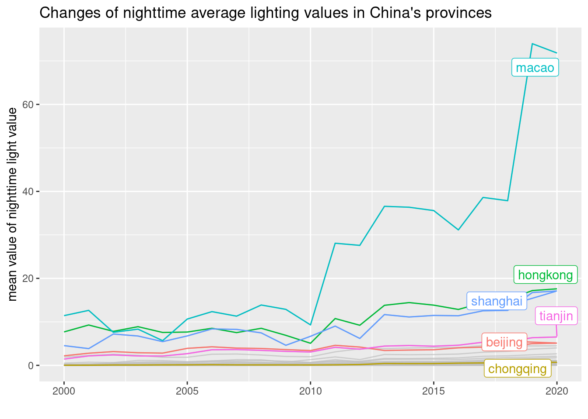
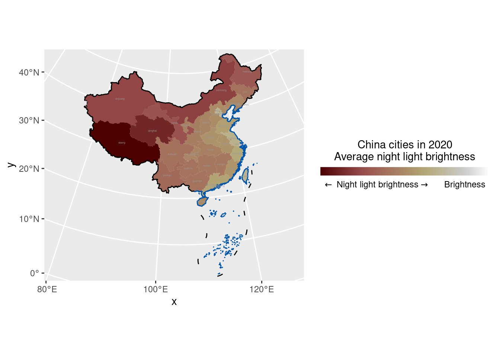

The spatial distribution of nighttime light value in China
Ziqi Tang
Introduction
Remote sensing of nighttime light emissions offers a unique perspective for investigations into some of these human behaviors. The Visible Infrared Imaging Radiometer Suite (VIIRS) instruments aboard the joint NASA/NOAA Suomi National Polar-orbiting Partnership (Suomi NPP) and NOAA-20 satellites provide global daily measurements of nocturnal visible and near-infrared (NIR) light that are suitable for Earth system science and applications studies. VIIRS Day/Night Band (DNB) data are used for estimating population, assessing electrification of remote areas, monitoring disasters and conflict, and understanding biological impacts of increased light pollution.
Background
China is one of the largest developing and most populous countries, covering 28 provinces, four municipalities, and two special administrative regions. It is located in the west of the Pacific Ocean and in the east of many Central Asian countries, and has superior conditions of sea and land with convenient traffic and development potentials, which promote the development of the economy, culture, and civilization in China and provide good foundations for population growth. Although China’s economy is growing rapidly, its uneven spatial pattern is evident. In China, strong contrasts exist between East and West, rural and urban regions, and even between different districts of the same city. Unequal regional development may cause social instability that hinders sustainable development.
Hypotheses
Where the economy is more developed, the light value at night is greater. From 2000 to 2020, the average night light value keeps getting bigger.
Problems being addressed
what are the changes of nighttime light value in each province from 2000 to 2020? How the nighttime light values are distributed in the whole china?
Materials and methods
Data
The nighttime light data is downloaded from https://dataverse.harvard.edu/dataset.xhtml?persistentId=doi:10.7910/DVN/YGIVCD.
The data of carbon emission is downloaded from Carbon Emission Accounts & Datasets in China.
Load required packages
library(latex2exp)
library(scico)
library(tidyverse)
library(sf)
library(raster)
library(gghighlight)
library(ggspatial)
library(ggforce)
library(readxl)
library(ggplot2)
library(knitr)
library(sf)
library(dplyr)Load data
provinceNight <- read_excel("data/Province.xlsx")
read_sf("data/Segment.geojson") -> cn
read_sf('data/2019AdministrativeDivisions/province.shp') -> provmap
read_sf('data/2019AdministrativeDivisions/city.shp') -> citymap
read_sf('data/2019AdministrativeDivisions/county.shp') -> countymap
read_sf("data/Coastline/coastline.shp") -> haxResults
The changes of nighttime light value
kable(provinceNight[1:10,12:17],caption = "Nighttime values of each province")| year | province code | province | mean | sum | standard deviation |
|---|---|---|---|---|---|
| 2000 | 340000 | anhui | 0.0496429 | 32857.241 | 0.7106815 |
| 2000 | 820000 | macao | 11.4331222 | 1680.669 | 23.6401838 |
| 2000 | 110000 | beijing | 2.1968540 | 188896.493 | 8.7485413 |
| 2000 | 500000 | chongqing | 0.0277841 | 10614.191 | 0.4958285 |
| 2000 | 350000 | fujian | 0.0990399 | 54189.002 | 1.1354043 |
| 2000 | 620000 | gansu | 0.0145384 | 31429.269 | 0.6332015 |
| 2000 | 440000 | guangdong | 0.5097869 | 397058.194 | 3.3080375 |
| 2000 | 450000 | guangxi | 0.0226370 | 23529.078 | 0.4413306 |
| 2000 | 520000 | guizhou | 0.0113969 | 9031.660 | 0.2127269 |
| 2000 | 460000 | hainan | 0.0694121 | 10264.244 | 1.2248777 |
gg <- ggplot(provinceNight) +
geom_line(aes(year,mean,color = province)) +
gghighlight(province %in% c("shanghai", "beijing",
"chongqing", "tianjin", "macao", "hongkong")) +
theme(legend.position="bottom",
legend.text=element_text(size=7),
legend.title = element_blank(),
legend.background = element_rect(fill = "#f2eadf",
color = "grey55",
size = 2)) +
labs(x = " ",y = "mean value of nighttime light value",title = "Changes of nighttime average lighting values in China's provinces")
plot(gg)
The distribution of nighttime value in each province in 2000&2020
readxl::read_xlsx("data/Province.xlsx") %>%
dplyr::filter(year == 2020) %>%
dplyr::select(-year) %>%
left_join(provmap) %>%
st_sf() -> df3
readxl::read_xlsx("data/Province.xlsx") %>%
dplyr::filter(year == 2000) %>%
dplyr::select(-year) %>%
left_join(provmap) %>%
st_sf() -> df2
df3 %>%
ggplot() +
geom_sf(aes(fill = mean), size = 0.01,
color = "white") +
geom_sf(data = cn, size = 0.5,
color = "black", fill = NA) +
geom_sf(data = hax, color = "#0055AA") +
stat_sf_coordinates(geom = "text", color = "gray60",
aes(label = province),
size = 0.9) +
coord_sf(crs = "+proj=lcc +lat_1=30 +lat_2=62 +lat_0=0 +lon_0=105 +x_0=0 +y_0=0 +ellps=krass +units=m +no_defs",
xlim = c(-3500000, 3090000)) +
scale_x_continuous(expand = c(0.02, 0.02)) +
scale_y_continuous(expand = c(0.02, 0.02)) +
scico::scale_fill_scico(
direction = -1,
trans = "log10",
breaks = c(0.0025, 0.18, 20),
labels = c("Dimness", latex2exp::TeX("$\\leftarrow$ Night light brightness$\\rightarrow$"), "Brightness"),
name = "China cities in 2020\nAverage night light brightness",
guide = guide_colorbar(
direction = "horizontal",
barheight = unit(3, units = "mm"),
barwidth = unit(60, units = "mm"),
draw.ulim = FALSE,
ticks.colour = "transparent",
title.position = 'top',
title.hjust = 0.5,
label.hjust = 0.5
)
)
ggsave("2020 average night light intensity in each city.png", width = 9, height = 9, device = png)
df2 %>%
ggplot() +
geom_sf(aes(fill = mean), size = 0.01,
color = "white") +
geom_sf(data = cn, size = 0.5,
color = "black", fill = NA) +
geom_sf(data = hax, color = "#0055AA") +
stat_sf_coordinates(geom = "text", color = "gray60",
aes(label = province),
size = 0.9) +
coord_sf(crs = "+proj=lcc +lat_1=30 +lat_2=62 +lat_0=0 +lon_0=105 +x_0=0 +y_0=0 +ellps=krass +units=m +no_defs",
xlim = c(-3500000, 3090000)) +
scale_x_continuous(expand = c(0.02, 0.02)) +
scale_y_continuous(expand = c(0.02, 0.02)) +
scico::scale_fill_scico(
direction = -1,
trans = "log10",
breaks = c(0.0025, 0.18, 20),
labels = c("Dimness", latex2exp::TeX("$\\leftarrow$ Night light brightness$\\rightarrow$"), "Brightness"),
name = "China cities in 2019\nAverage night light brightness",
guide = guide_colorbar(
direction = "horizontal",
barheight = unit(3, units = "mm"),
barwidth = unit(60, units = "mm"),
draw.ulim = FALSE,
ticks.colour = "transparent",
title.position = 'top',
title.hjust = 0.5,
label.hjust = 0.5
)
)ggsave("2000 average night light intensity in each city.png", width = 9, height = 9, device = png)readxl::read_xlsx("data/Country.xlsx") %>%
ggplot(aes(x = Year, y = Mean)) +
geom_line() +
geom_smooth() +
scale_color_brewer(palette = "Set2") +
scale_x_continuous(breaks = 2000:2020) +
labs(x = "", y = "Average luminous intensity",
title = "Changes in China's luminous intensity from 2000 to 2020")raster("data/tif/cn2020.tif") -> cn2020
cn2020 %>%
aggregate(fact = 10, fun = mean) %>%
rasterToPoints(spatial = TRUE) %>%
st_as_sf() -> cn2020points
cn2020points %>%
st_transform("+proj=lcc +lat_1=30 +lat_2=62 +lat_0=0 +lon_0=105 +x_0=0 +y_0=0 +ellps=krass +units=m +no_defs") -> cn2020pointsThe distribution of nighttime light value in each county
readxl::read_xlsx('data/County.xlsx') %>%
dplyr::filter(Year == 2020) %>%
dplyr::select(-Year) %>%
left_join(countymap) %>%
st_sf() -> dfCounty## Joining, by = c("省代码", "市代码", "类型")dfCounty %>%
ggplot() +
geom_sf(aes(fill = Mean), size = 0.01,
color = "white") +
geom_sf(data = cn, size = 0.5,
color = "black", fill = NA) +
geom_sf(data = hax, color = "#0055AA") +
coord_sf(crs = "+proj=lcc +lat_1=30 +lat_2=62 +lat_0=0 +lon_0=105 +x_0=0 +y_0=0 +ellps=krass +units=m +no_defs",
xlim = c(-3500000, 3090000)) +
scico::scale_fill_scico(
palette = "lajolla",
direction = -1,
trans = "log10",
breaks = c(0.0001, 0.06, 35),
labels = c("Dimness", latex2exp::TeX("$\\leftarrow$ Night light brightness $\\rightarrow$"), "Brightness"),
name = "China's districts and counties in 2020\nAverage night light brightness",
guide = guide_colorbar(
direction = "horizontal",
barheight = unit(3, units = "mm"),
barwidth = unit(60, units = "mm"),
draw.ulim = FALSE,
ticks.colour = "transparent",
title.position = 'top',
title.hjust = 0.5,
label.hjust = 0.5
)
) +
scale_x_continuous(expand = c(0.02, 0.02)) +
scale_y_continuous(expand = c(0.02, 0.02))
The raster map of nighttime light
cn2020points %>%
ggplot() +
geom_sf(aes(color = cn2020), size = 0.01) +
geom_sf(data = cn, size = 0.5,
color = "black", fill = NA) +
geom_sf(data = hax, color = "#0055AA") +
scale_color_gradientn(colours = c("#1E1E1E", "#1E1E1E", "#fcfff7", "#f1ff8f", "#f1e93f", "#fabd08")) +
annotation_scale(width_hint = 0.2,
pad_x = unit(0.5, "cm")) +
annotation_north_arrow(location = "tr", which_north = "false",
width = unit(0.3, "cm"),
height = unit(0.2, "cm")) +
coord_sf(crs = "+proj=lcc +lat_1=30 +lat_2=62 +lat_0=0 +lon_0=105 +x_0=0 +y_0=0 +ellps=krass +units=m +no_defs",
xlim = c(-3500000, 3090000)) +
scico::scale_color_scico(
palette = "lajolla",
direction = -1,
trans = "log10",
breaks = c(0.02, 0.6, 20),
labels = c("Dimness", latex2exp::TeX("$\\leftarrow$ Night light brightness$\\rightarrow$"), "Brightness"),
name = "China's night light data in 2020",
guide = guide_colorbar(
direction = "horizontal",
barheight = unit(3, units = "mm"),
barwidth = unit(60, units = "mm"),
draw.ulim = FALSE,
ticks.colour = "transparent",
title.position = 'top',
title.hjust = 0.5,
label.hjust = 0.5
)
) ggsave("China's night light data in 2020.png", width = 9, height = 9, device = png)The distribution of carbon emissions
readxl::read_xlsx('data/Province.xlsx') ->dfeco
dfeco %>%
dplyr::filter(year == 2018) %>%
dplyr::select(-year) %>%
left_join(provmap) %>%
st_sf() -> Co
Co %>%
ggplot() +
geom_sf(aes(fill = RawCoal), size = 0.01,
color = "white")+
geom_sf(data = cn, size = 0.5,
color = "black", fill = NA) +
geom_sf(data = hax, color = "#0055AA") +
coord_sf(crs = "+proj=lcc +lat_1=30 +lat_2=62 +lat_0=0 +lon_0=105 +x_0=0 +y_0=0 +ellps=krass +units=m +no_defs",
xlim = c(-3500000, 3090000)) +
scico::scale_fill_scico(
palette = "lajolla",
direction = -1,
trans = "log10",
breaks = c(0.0001, 0.06, 35),
labels = c("", latex2exp::TeX("$\\leftarrow$ carbon emission $\\rightarrow$"), ""),
name = "Provinces and cities in China in 2020\nAverage carbon emissions",
guide = guide_colorbar(
direction = "horizontal",
barheight = unit(3, units = "mm"),
barwidth = unit(60, units = "mm"),
draw.ulim = FALSE,
ticks.colour = "transparent",
title.position = 'top',
title.hjust = 0.5,
label.hjust = 0.5
)
) +
scale_x_continuous(expand = c(0.02, 0.02)) +
scale_y_continuous(expand = c(0.02, 0.02))Calculate the Person Coefficient
res <- cor.test(Co$RawCoal, Co$mean,
method = "pearson")
res##
## Pearson's product-moment correlation
##
## data: Co$RawCoal and Co$mean
## t = -1.7746, df = 33, p-value = 0.08519
## alternative hypothesis: true correlation is not equal to 0
## 95 percent confidence interval:
## -0.57212917 0.04224436
## sample estimates:
## cor
## -0.2951573Conclusions
It can be seen from the results that the night light value of China’s internal areas is generally lower than that of China’s coastal areas, indicating that China’s coastal areas have more frequent night activities than inland areas. Urbanization is the basis of night activities, which also indicates that urbanization in China’s coastal regions is relatively high. Sites with a significant gap in the economic base have a large hole in the night light value in the area. From year 2000 to 2020, due to the continuous growth of China’s financial expenditure on electrical infrastructure, the value of night lights of the whole country continued to grow steadily. Furthermore, though the night light value in inland areas of China is still lower than that in coastal areas, the gap between different regions is narrowing, showing the unbalanced development among those regions is improving.
References
Xu, H., Yang, H., Li, X., Jin, H., & Li, D. (2015). Multi-Scale Measurement of Regional Inequality in Mainland China during 2005–2010 Using DMSP/OLS Night Light Imagery and Population Density Grid Data. Sustainability, 7(10), 13469–13499.
Yu, S., Zhang, Z., & Liu, F. (2018). Monitoring Population Evolution in China Using Time-Series DMSP/OLS Nightlight Imagery. Remote Sensing, 10(2), 194.
Ma, T.; Zhou, Y.; Zhou, C.; Haynie, S.; Pei, T.; Xu, T. Night-time light derived estimation of spatio-temporal characteristics of urbanization dynamics using DMSP/OLS satellite data. Remote Sens. Environ. 2015, 158, 453–464.